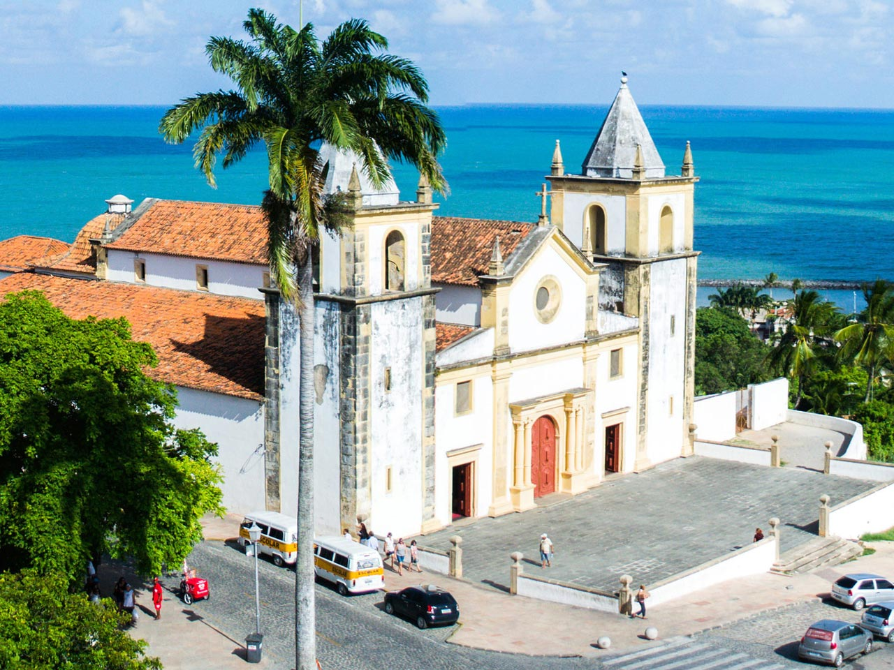

Bem-vindo a OLINDA
Olinda é uma das mais antigas e belas cidades do Brasil, situada no estado de Pernambuco, a apenas 6 km da capital Recife. Fundada oficialmente em 12 de março de 1535 pelos portugueses, Olinda foi durante muitos anos o centro econômico da capitania, especialmente com o cultivo de cana-de-açúcar. Com um conjunto arquitetônico preservado, ladeiras históricas e uma rica tradição cultural, Olinda é reconhecida como um verdadeiro patrimônio da humanidade. A cidade é um testemunho vivo da herança colonial brasileira, onde cada rua e cada edifício contam histórias de um passado glorioso e vibrante, refletindo a mistura de influências indígenas, africanas e europeias que moldaram a identidade cultural da região. Ao caminhar pelas suas ruas, é possível sentir a história pulsando e se entrelaçando com o cotidiano dos habitantes, que preservam com carinho suas tradições.
Em 1982, foi declarada Patrimônio Histórico e Cultural da Humanidade pela UNESCO, graças ao seu acervo urbano colonial, às igrejas barrocas e aos eventos culturais que movimentam a cidade. Entre seus grandes atrativos estão o famoso Carnaval de rua, os bonecos gigantes, os blocos de frevo, os ateliês de arte e a deliciosa culinária pernambucana. A cidade é um verdadeiro mosaico de cultura e história, onde cada esquina revela um pouco mais sobre suas raízes e tradições. As festividades e celebrações que ocorrem ao longo do ano atraem turistas de todas as partes do mundo, fazendo de Olinda um destino imperdível para quem busca uma experiência rica e autêntica no Brasil. A atmosfera vibrante da cidade, marcada por sua diversidade cultural, é um convite para que todos se deixem envolver pela magia e encanto que Olinda tem a oferecer.
Olinda é também um polo de resistência cultural. Em suas ruas, é possível encontrar desde artistas plásticos consagrados até músicos populares, sempre conectados às raízes do Nordeste. O pôr do sol na Igreja da Sé, a vista para o mar, as ladeiras coloridas e o som dos tambores fazem dessa cidade uma experiência inesquecível para qualquer visitante. Além disso, a cidade abriga festivais e eventos ao longo do ano, que atraem turistas de todas as partes do Brasil e do mundo, consolidando Olinda como um destino turístico imperdível. A atmosfera vibrante e acolhedora de Olinda, combinada com a hospitalidade de seu povo, faz com que todos se sintam em casa, criando memórias que durarão para sempre. Cada visita a Olinda é uma nova descoberta, uma nova história para contar, e um convite para mergulhar na rica tapeçaria cultural que a cidade oferece.
Atrações Turísticas
Descubra as principais atrações de Olinda:
- Igreja da Sé: Uma das mais antigas igrejas do Brasil, com uma vista deslumbrante da cidade e uma rica história ligada à colonização. Este monumento é um importante ponto de referência, não apenas religioso, mas também turístico, atraindo visitantes que desejam conhecer sua arquitetura impressionante e a história que a envolve. A Igreja da Sé é um símbolo da fé e da resiliência do povo olindense, que ao longo dos anos a manteve como um local sagrado e de grande importância cultural.
- Centro Histórico: Patrimônio Mundial da UNESCO, com ruas de paralelepípedos e casarões coloniais que contam a história da cidade desde sua fundação. O Centro Histórico é um convite a um passeio a pé, onde cada passo revela detalhes fascinantes da arquitetura e da vida cotidiana dos olindenses ao longo dos séculos. As cores vibrantes das fachadas, as esculturas e os azulejos antigos são um verdadeiro deleite para os olhos e um testemunho da rica herança cultural que Olinda preserva com tanto carinho.
- Carnaval de Olinda: Famoso por seus bonecos gigantes e blocos de frevo, que atraem milhares de turistas todos os anos, oferecendo uma experiência cultural única. O carnaval é uma explosão de cores e ritmos, onde a tradição e a alegria se encontram nas ladeiras da cidade, fazendo com que cada folião viva momentos memoráveis. A energia contagiante do carnaval de Olinda é algo que poucos lugares conseguem igualar, e a interação entre turistas e locais cria um ambiente festivo e acolhedor que é difícil de esquecer.
- Ateliês de Arte: Visite os ateliês dos artistas locais e conheça a rica produção cultural da cidade, que reflete a identidade pernambucana através de suas obras. Olinda é um verdadeiro celeiro de artistas, onde a criatividade se manifesta em diversas formas, desde pinturas e esculturas até artesanato e música. Os ateliês são espaços vivos, onde a arte é criada e compartilhada, e os visitantes têm a oportunidade de interagir com os artistas e entender o processo criativo por trás das obras que admiram.
1. Igreja da Sé
A Igreja da Sé, também conhecida como Igreja de São Salvador do Mundo, é o principal símbolo religioso de Olinda. Situada no ponto mais alto da cidade, foi construída em 1540 e reconstruída diversas vezes devido a ataques e reformas. É um exemplar da arquitetura colonial, com elementos góticos e barrocos que encantam os visitantes. A igreja é não apenas um local de culto, mas também um marco histórico que testemunhou a evolução da cidade ao longo dos séculos. Sua importância transcende a religião, sendo um ponto de encontro para a comunidade e um espaço onde a cultura e a espiritualidade se entrelaçam de maneira única. A beleza de sua fachada e a grandiosidade de seu interior fazem dela um dos locais mais visitados e admirados da cidade.
Do alto do mirante da Sé, é possível ver toda a cidade de Olinda, parte de Recife e o mar ao fundo. A vista é considerada uma das mais belas do litoral nordestino, especialmente ao pôr do sol, quando as cores do céu se misturam com o azul do oceano. Ao redor da igreja, há barraquinhas que vendem artesanato, tapioca, água de coco e lembranças típicas da região, proporcionando uma experiência única aos turistas que desejam levar um pedaço da cultura olindense para casa. Esse cenário encantador torna a visita à Igreja da Sé ainda mais especial, pois os visitantes podem desfrutar de um ambiente vibrante e acolhedor, repleto de vida e cultura. Os sons da cidade, misturados com as melodias dos músicos de rua, criam uma atmosfera mágica que convida a um momento de reflexão e apreciação.
A igreja também guarda um rico acervo religioso, como imagens sacras e altares entalhados. É um local que mistura fé, história e beleza natural, sendo parada obrigatória para quem visita a cidade. A atmosfera ao redor da igreja é repleta de vida, com artistas de rua e grupos de música que animam o ambiente, tornando a visita ainda mais especial. Além disso, a Igreja da Sé é frequentemente palco de eventos culturais e religiosos, que atraem tanto os locais quanto os turistas. Esses eventos, que vão desde celebrações litúrgicas a festivais de música e arte, reforçam a importância da igreja como um centro cultural e espiritual na cidade. A conexão entre a comunidade e a igreja é palpável, refletindo o profundo respeito e amor que os olindenses têm por seu patrimônio histórico e cultural.
Leia mais sobre a Igreja da Sé
2. Carnaval de Olinda
O Carnaval de Olinda é um dos mais tradicionais do Brasil. Sem trios elétricos nem cordões de isolamento, ele é feito pelo povo e para o povo. Milhares de foliões se espalham pelas ladeiras da cidade ao som do frevo, maracatu, coco e ciranda, criando uma atmosfera vibrante e democrática que encanta tanto os locais quanto os visitantes. O carnaval em Olinda é uma verdadeira celebração da cultura nordestina, onde a música e a dança se entrelaçam em uma explosão de cores e alegria. Cada bloco de carnaval traz consigo uma história, uma tradição e uma energia contagiante, fazendo com que todos se sintam parte desse grande evento. A união entre os foliões, independentemente de sua origem, cria um sentimento de comunidade e pertencimento que é característico do carnaval olindense.
Uma das marcas registradas são os Bonecos Gigantes, que desfilam pelas ruas representando personagens famosos da cultura, política e ficção. O mais conhecido deles é o Homem da Meia-Noite, que abre oficialmente o carnaval olindense na noite de sábado, atraindo multidões. Os bonecos são uma tradição que remonta há décadas, e cada um deles conta uma história única, refletindo a criatividade e o humor do povo olindense. Além dos bonecos, a presença de músicos e dançarinos nas ruas transforma a cidade em um verdadeiro espetáculo, onde a alegria e a tradição se encontram em cada esquina. Os foliões se vestem com trajes coloridos e criativos, contribuindo para a atmosfera festiva e animada que permeia a cidade durante o carnaval.
Além dos blocos, há apresentações culturais, oficinas de música, fantasias criativas e uma participação massiva dos moradores. O carnaval em Olinda começa bem antes da data oficial e é considerado Patrimônio Cultural Imaterial do Brasil, refletindo a rica diversidade cultural da região. Durante o carnaval, a cidade se transforma em um grande palco, onde a arte e a cultura se manifestam de diversas formas, fazendo com que cada visitante se sinta parte dessa festa contagiante. A energia e a paixão que permeiam o carnaval olindense são inigualáveis, criando memórias que duram para toda a vida e unindo pessoas de diferentes origens em uma celebração comum. O carnaval de Olinda é, sem dúvida, uma experiência transformadora, que deixa marcas indeléveis na alma de quem o vivencia.

Veja mais sobre o Carnaval de Olinda
3. Museu de Arte Contemporânea de Pernambuco (MAC-PE)
Localizado no antigo Mosteiro de São Bento, o Museu de Arte Contemporânea de Pernambuco é um dos principais centros culturais da cidade. Fundado em 1966, o museu reúne mais de 1.200 obras de arte moderna e contemporânea, incluindo artistas pernambucanos, nacionais e internacionais. O MAC-PE é um espaço que promove o diálogo entre a arte e o público, oferecendo uma programação diversificada que atrai visitantes de todas as idades. A importância do museu vai além do acervo, pois ele se tornou um ponto de referência para a discussão e a promoção da arte contemporânea no Brasil, contribuindo para a formação de novos públicos e para o fortalecimento da cena artística local. As exposições são cuidadosamente curadas, permitindo que os visitantes se aprofundem nas obras e compreendam o contexto em que foram criadas.
Entre os destaques do acervo estão pinturas, esculturas, gravuras, fotografias e instalações. O prédio em si é uma atração, pois mescla o estilo barroco do século XVIII com a linguagem artística contemporânea. A visita permite ao público refletir sobre contrastes entre o antigo e o moderno, proporcionando uma experiência enriquecedora. O museu também oferece visitas guiadas que ajudam a contextualizar as obras e a história da arte contemporânea no Brasil. Essas visitas são uma oportunidade única para os visitantes aprenderem mais sobre as obras e os artistas, enriquecendo ainda mais a experiência cultural. O MAC-PE se destaca por sua capacidade de se reinventar e se adaptar às novas tendências artísticas, mantendo-se relevante no cenário cultural brasileiro.
O MAC-PE também promove exposições temporárias, eventos culturais, palestras e oficinas. É um espaço de diálogo entre a tradição e a vanguarda artística, ideal para estudantes, pesquisadores e amantes da arte em geral. A programação do museu é diversificada, garantindo sempre algo novo e interessante para os visitantes. Além disso, o museu frequentemente colabora com artistas e coletivos locais, fortalecendo a cena artística de Olinda e contribuindo para o desenvolvimento cultural da região. A interação entre o museu e a comunidade é fundamental para a sua missão, pois busca não apenas preservar a arte, mas também fomentá-la e torná-la acessível a todos. O MAC-PE é, portanto, um espaço vital para a promoção da cultura e da arte, servindo como um ponto de encontro para a troca de ideias e experiências.

Descubra mais sobre o MAC-PE
Referências
| Fonte | Descrição | Link |
|---|---|---|
| UNESCO | Informações sobre o Patrimônio Histórico de Olinda | Acesse aqui |
| Wikipedia | História da Igreja da Sé | Acesse aqui |